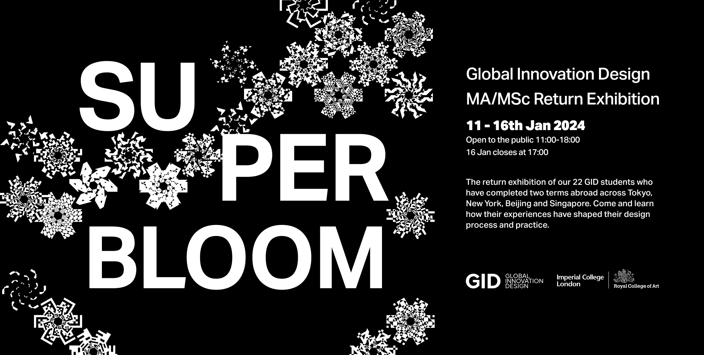
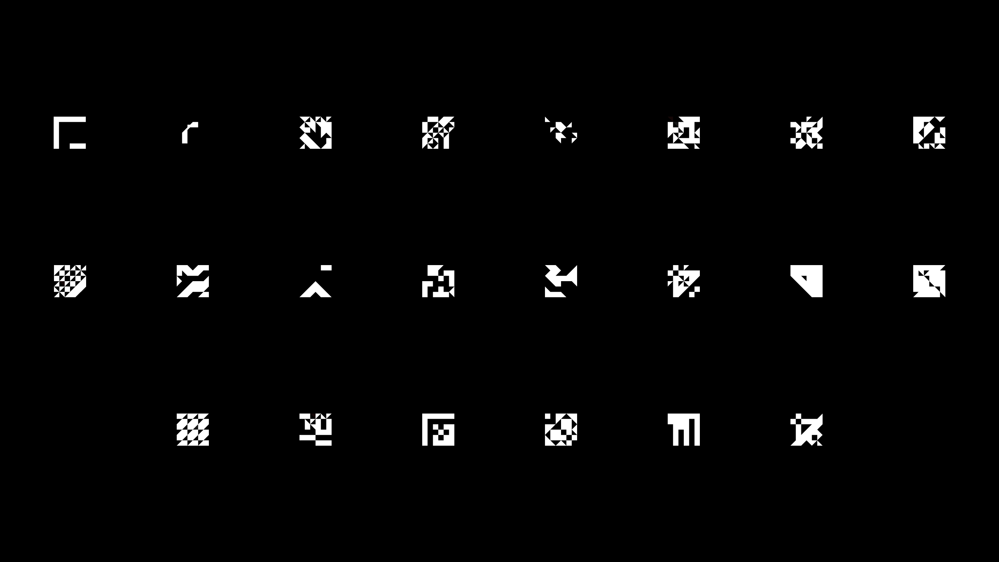
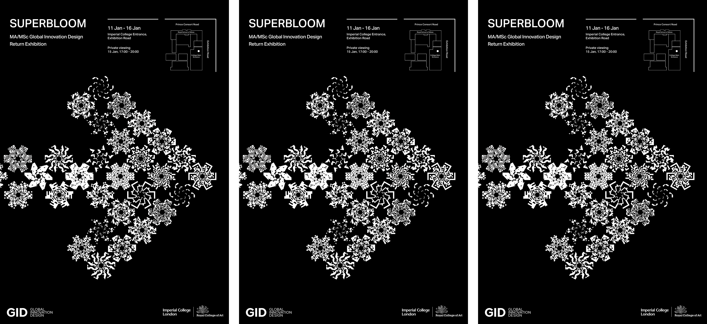
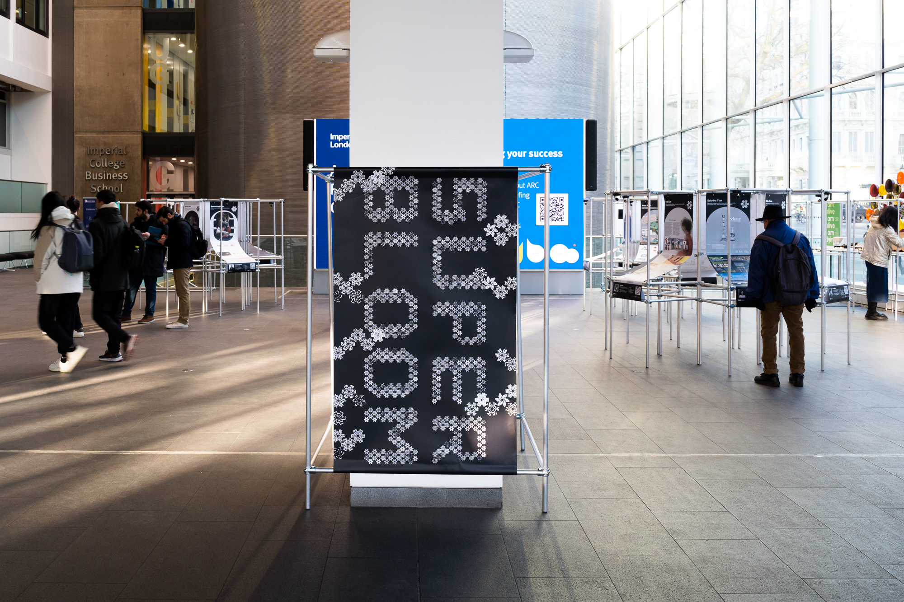
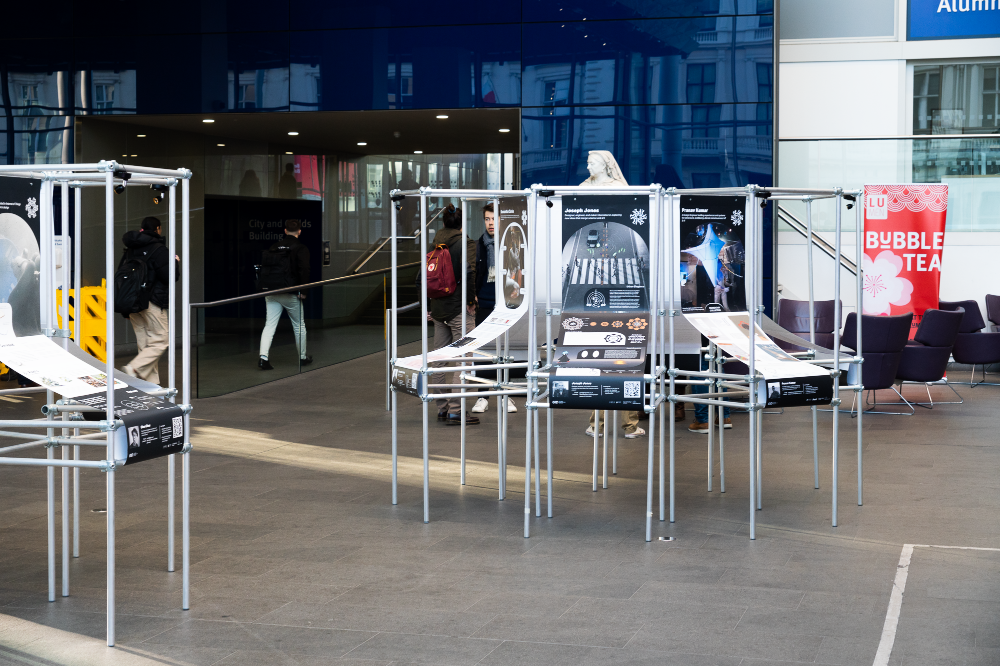
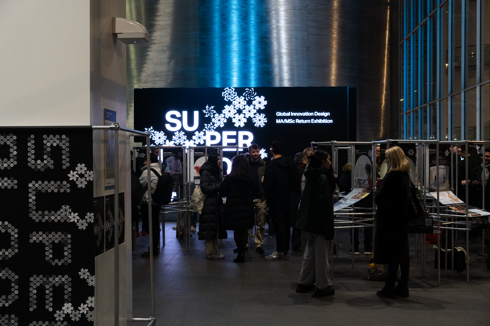
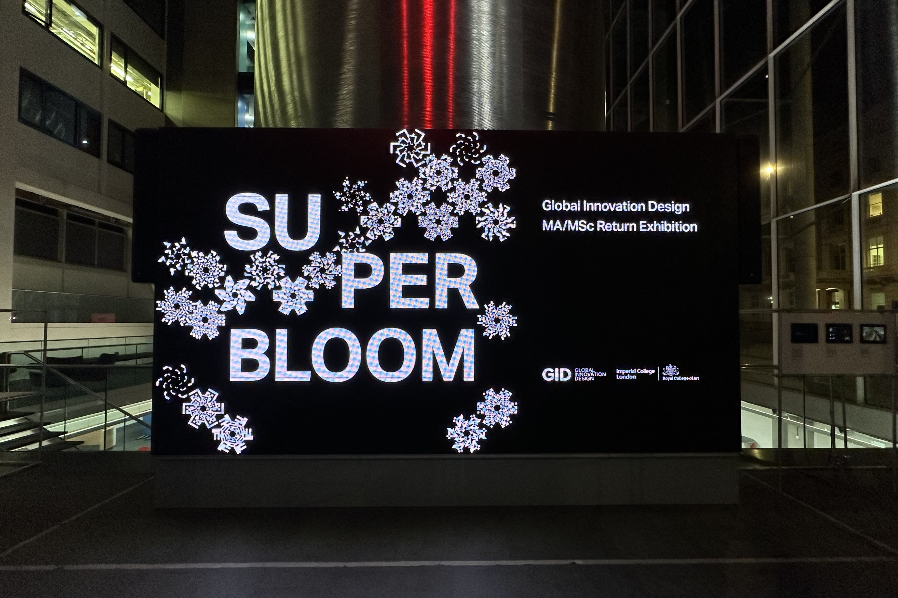
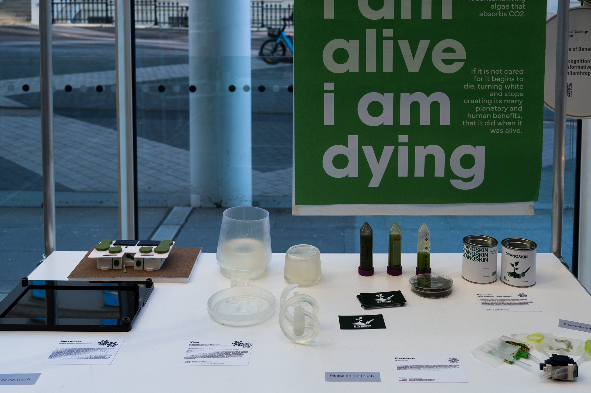

A superbloom is a rare desert phenomenon where dormant wildflower seeds bloom simultaneously. Superbloom marks the return of the 2024 MA/MSc Global Innovation Design cohort following two terms studying across Tokyo, New York, Beijing, and Singapore — celebrating how their experiences shaped their design process and practice.

The Global Innovation Design programme sends students across four cities — Tokyo, New York, Beijing, and Singapore — over two terms. The return exhibition celebrates this journey, showcasing the artefacts and digital explorations that emerged from it.


Superbloom was exhibited at Imperial College London from January 11–16, 2024. The visual identity accompanied the cohort's project presentations, representing the breadth of design thinking shaped by four cities across two terms.




